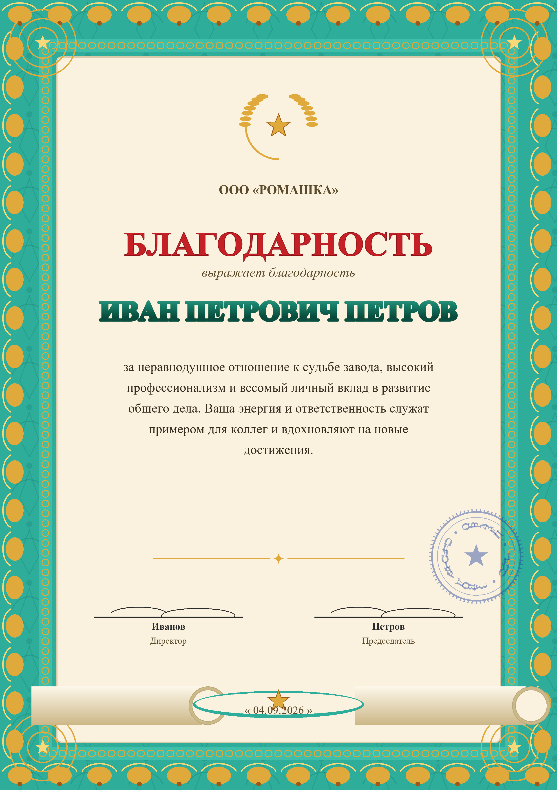

Что это: штаб-фабрика из семи ИИ-агентов, которая за неделю оцифровала архив фонда (280 файлов → база 10 902 человека × 243 колонки), поставила на конвейер выпуск документов — и управляет собой через живую карту организма.
Проблема: у общественных организаций нет денег на IT-отдел — завод заменяет его целиком. Для кого: фонды, клубы, избирательные кампании, малый бизнес.
Оператор завода — человек без команды программистов. Всё ниже сделано с AutoClaw: замысел → декомпозиция → код → документы → контроль качества.
Интерактивный Конфигуратор: каждая часть завода — живая ячейка. Директор двигает органы, соединяет связи, меняет статусы — и видит организм целиком. Классификация — пирамидой: кто решает → кто исполняет → на чём работает → что выпущено.
Живая запись экрана не нужна: вкладка «Организм» выглядит и ведёт себя именно так — ячейки двигаются мышью, связи переподключаются, масштаб от 30 до 250%, отмена — Ctrl+Z.
Правое крыло карты — «Продукты-итоги» (21 результат с лучами к Штабу), левое — «Опоры» (устав, доктрины) и «Цель». Отмена любых действий — Ctrl+Z по 60 шагам истории.
Дерево целей построено по ССП: четыре полосы-перспективы, 20 подцелей, у каждой — исполнитель по RACI. Связи идут снизу вверх: Потенциал → Ресурсы → Процессы → Люди. Это не презентация для галочки — карта управляет ежедневной работой агентов.
Каждая позиция — готовый продукт, сделанный агентами завода. Грамота — лишь один из станков на конвейере.
Уставы, протоколы, политики ПДн, заявления, письма — 10 docx за день, с печатным следом и реестрами.
280 разрозненных файлов → мастер-база 10 902×243 с дедупликацией. Excel + JSON + конвейер обновления.
142 скана анкет → структурированный текст через Yandex SpeechKit OCR. Цена вопроса — копейки.
Ролик v4: Full HD, монтажные сцены, озвучка «dasha» (SpeechKit TTS). Сценарий, раскадровка, сборка — автоматом.
Фирменный бланк, live-генерация: грамота печатается строка за строкой. Версия v5 утверждена.
Полная инвентаризация софта и автозапуска, чистка, рекомендации — отчёт человеку простым языком.
Jitsi-мост: бот заходит в комнату, слышит голос, пишет в чат, ведёт протокол. Первый эфир прошёл.
Ежедневный автомат 11:30 ищет акции кредитов и тарифов, докладывает — ничего не покупает сам.
Директор диктует: кому, за что, от кого. Кло собирает документ по правилам оформления (композиция бланка, шапка, подписи), показывает предпросмотр и печатает на принтер Epson — с записью в реестр. От приказа до бумаги — минуты, а не дни.
Тот же конвейер выпускает обращения, воззвания, благодарности и пакеты документов — по одним и тем же правилам качества.

Грамота v5 — одна из пяти версий, доведённых агентами по замечаниям человека: правила композиции бланка заведены в отдельный стандарт завода.
Всё, что вы видели, воспроизводится для любой организации за считанные дни: архив → база → документы → коммуникации → живое управление. Ни одного программиста в штате не потребовалось.